Chapter 22. Website Builder
The Website Builder feature facilitates development of public-facing Early Warning, Alert and Response System (EWARS) websites. It helps with sharing data and reports with personnel not registered as EWARS users. It provides an excellent way of sharing key information with personnel of WHO, the ministry of health or health partners and donors: audiences who are not part of the EWARS reporting mechanism. The intended audience can access EWARS websites just like other live sites on the web. Multiple websites can be built under each account to fulfil different needs. While developing such sites using the Website Builder feature is largely self-explanatory, possessing a basic understanding of Hypertext Markup Language (HTML) and Cascading Style Sheets (CSS) is useful. This chapter contains key information about using the Website Builder feature.
22.1 Configuring a website
There are two ways to configure a website in the system:
copy and modify the sample website
create a new website
Before you embark on this activity, ensure that locations, indicators and forms are correctly configured in the system. Creating a website should be the last activity, having established a proper early warning system.
| It is | recommended to use the standard template provided in the Model account to build your website. If you need any technical support in building an EWARS website, please contact the EWARS Super Administrator. |
The sample website is accessible at https://sampleweb.ewars.ws, as shown below:
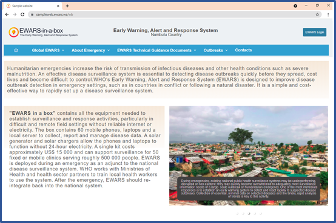
The following topic sets out how to copy the sample website and modify it. All EWARS websites should have similar formatting. The contents can differ, but it is recommended to follow the same landing page and similar page structures.
22.2 Copying the sample website
The sample website is in the Model account. To use it, you first need to copy it to your account, following the steps below.
- Select Menu > Configuration Transfer. Select Model account from the Source Account drop-down menu. The system lists all transferable items. Click on the filter icon of the Type column: filter options are visible. In the Filter by condition drop-down menu, select Website and click on Save. All the sample websites are listed. Select Sample Website (sampleweb.ewars.ws). Click on
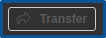
, and the sample website is copied to your account, along with its dependencies.
To view the website under Website Builder in the EWARS account, follow the steps below.
- Select Menu > Website Builder, and the sample website appears in the list, as shown below:
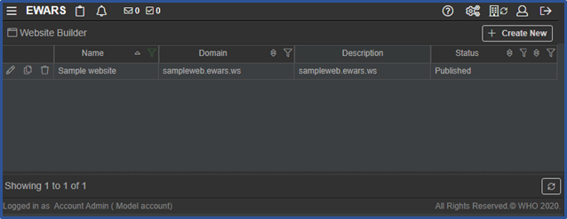
You can also view the website as a preview.
- Click on the edit icon of the website (e.g. Sample website (sampleweb.ewars.ws)), and the website editor screen opens. Click on
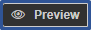
, and the sample website opens in a new browser tab.
The following topic sets out how to modify the sample website according to your requirements.
22.3 Modifying the sample website
Successful transfer of the website does not make it functional: you need to modify it so that your website displays information relevant to your context. Once the website is modified, you can publish it.
The screenshot below shows the header page, homepage and footer page that you can modify according to your requirements:
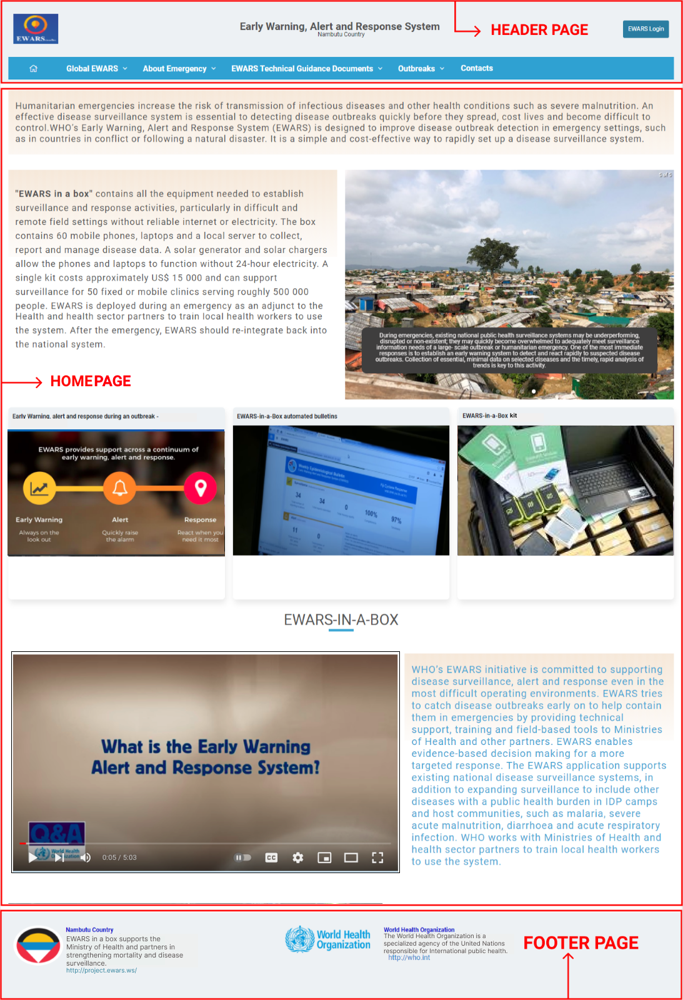
The following topics demonstrate the five key modifications you can make to the sample website:
modifying the site settings
modifying the header page
modifying the footer page
modifying the homepage
adding or removing a new page.
22.3.1 Modifying the site settings
Site settings capture and store basic information such as name, domain, description and status for the website. The steps to modify these are as follows.
- Select Menu > Website Builder. Click on the edit icon of the sample website, and the editor screen below appears:
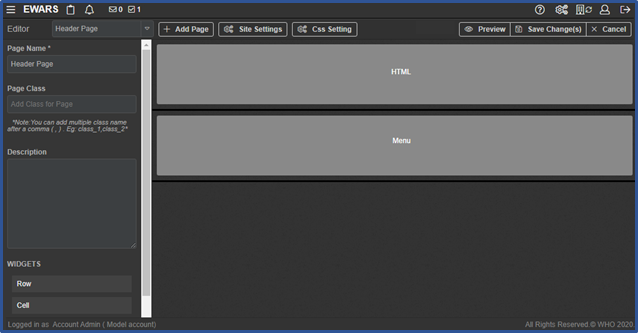
- Click on
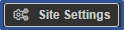
, and the site settings open, as shown below:
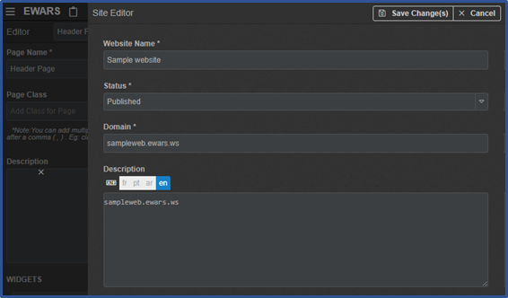
Give a Website Name (e.g. “Country X EWARS website”).
Set the appropriate Status option:
Published – the website is ready to use and accessible via the universal resource locator (URL)
Unpublished – the website is not ready to use: unpublished status allows you to keep the website in a draft state before publishing. The following message appears when an unpublished website is accessed:
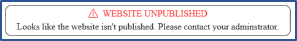
- Enter the Domain of the website. By design, the domain is the same as the one under which the EWARS account is running. You cannot deliver the published website on a different URL. In the case of WHO hosting the server, it is “ewars.ws”. Thus, the user can enter the subdomain of the “ewars.ws” domain. This is the URL/access point for the website.
| Note: subdomains are the part of a domain that comes before the main domain name and domain extension. |
The domain name comprises two components: the first part (that you choose) and second (fixed) part (e.g. “xxx.ewars.ws”, where “xxx” is the configurable part that you choose and “.ewars.ws” is the fixed part):
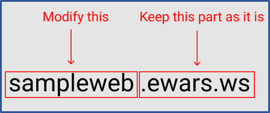
As illustrated above, sampleweb is the subdomain and ewars.ws is the domain. If the subdomain chosen is being used elsewhere, the following message is shown:
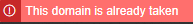
Replace it with an unused subdomain.
Modify the Description (e.g. enter information about the purpose of the website, a target audience and special configuration points) likely to be useful in maintenance of the website.
Enter a Tag for the sample website. A tag is an identifier that will help you to find your website in the Configuration Transfer menu. You can add one or more tags.
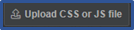
allows you to upload a CSS or JavaScript (JS) file to apply styles, but this is not mandatory. To create these files, you need knowledge of HTML and CSS and/or JS, but if you have no prior knowledge of these, you do not need to upload a file: failing to do so will not affect the existing style of the website. If you need further information or support, please contact the EWARS Super Administrator.
Click on the , and a file chooser dialogue box opens. Select a JS or CSS file and upload it.
When you don’t need the file any more, click on the delete icon to delete it.
| Note: CSS or JS are powerful ways to apply styling to a website, although this requires technical knowledge of HTML, CSS and/or JS. For technical support on CSS or JS files, please contact the EWARS Super Administrator. |
- Click on Save Change(s); the site settings are modified, and you can open the website using the new domain.
22.3.2 Modifying the header page
The header page of the website contains the country name, logo and link button. These are annotated and highlighted below:
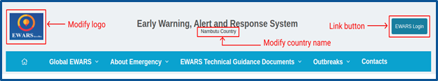
To modify the header, follow the steps below.
- Select Menu > Website Builder. Click on the edit icon of the website, and the website editor opens. By default, Header Page is selected in the page drop-down menu at the top left-hand corner > click on the first row with the label HTML, and the widget configuration screen opens.
Step 1. Modify the country name.
- Keep the cursor on Nambutu Country > click the Backspace key to delete it. Enter the name of your country.
Step 2. Modify images on the header page.
Images on the header page include logos, flags and photos. It is recommended that image sizes should not exceed 2GB to avoid performance degradation after uploading.
These images should be uploaded to web content first, so modifying them is a two-step process.
Step 1. Upload the images to web content.
First, select images you want to upload to web content: they should be in your laptop/desktop folder.
- Click on
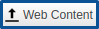
, and the Web Content screen opens in a new tab, as shown below:
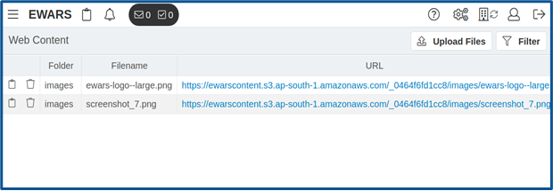
- Click on
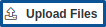
> select the relevant Folder Path (e.g. images) > click on , and a file chooser dialogue box opens. Select a logo file, and the logo is uploaded. Look for the newly uploaded file and click on the copy icon of the uploaded image > close the Web Content browser tab, and you will be back on the Website Builder configuration screen.
The logo image file is now uploaded. The second step is to provide the copied URL of the uploaded image.
Step 2. Modify the image URL.
- Double-click on the image you want to modify, and the Image Properties screen below opens:
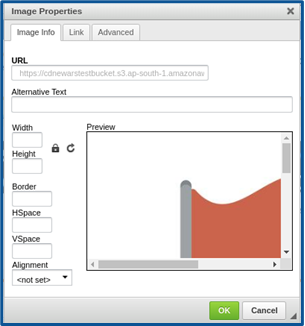
- Replace the URL under the Image Info tab with the copied URL of the uploaded image > enter the new Width in pixels (e.g. “100”) > enter the new Height in pixels (e.g. “100”) > click on OK to close the dialogue box, and the image is replaced.
Step 3. Link the
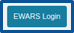
button so that it gets redirected to http://ewars.ws.- Select the text EWARS Login in the button > click on the link icon, and the link screen below appears:
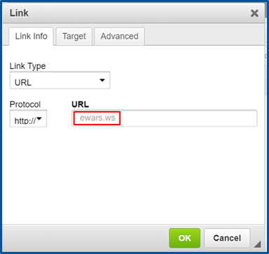
Enter “ewars.ws” in the URL field > click on OK > click on Save widget changes, and the widget closes.
Click on Save Change(s) – the header page changes are saved, and the button is now linked to the EWARS login page.
Click on
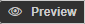
> click on , and the EWARS login page appears, as shown below:
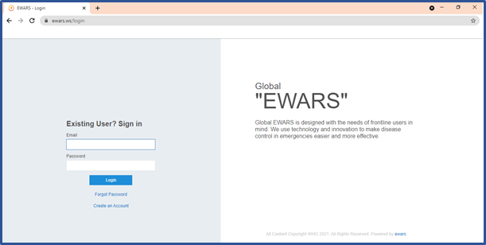
22.3.4 Modifying the homepage content
The homepage contains text paragraphs, images, image carousels and video widgets. These are annotated and highlighted below:
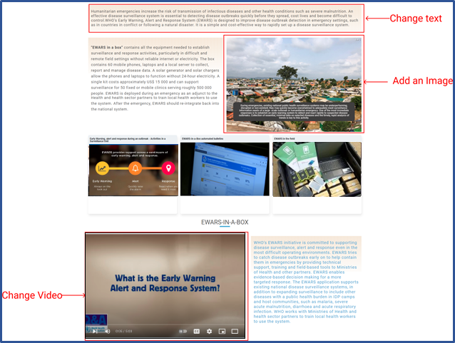
To find out more about configuring widgets, refer to the relevant widget topic in Chapter 17. Widgets and their configuration.
For demonstration purposes, this guide shows how to modify the text paragraph, add a new image to the carousel and modify the video.
- Select Menu > Website Builder. Click on the edit icon of the sample website, and the website editor opens. Select Home from the page drop-down menu at the top left-hand corner, and the homepage configuration screen below appears:
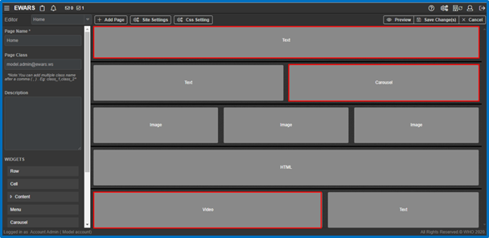
Follow the steps below to perform the modifications in the highlighted widgets of the screenshot above.
Step 1. Change the text paragraph.
- As shown in the screenshot above, click on the first row with the label Text, and the text widget configuration screen opens, as shown below:
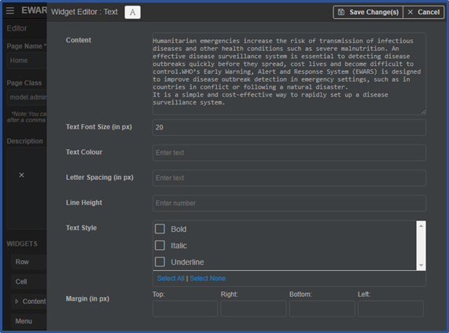
- Replace the text in the Content field with your desired content > click on Save Change(s) – the changes are saved and the widget closes.
Step 2. Add an image and related text to the carousel.
The carousel widget allows you to add multiple images in a single space.
- On the homepage configuration screen, click on the cell with the label Carousel, and the widget editor screen below appears:
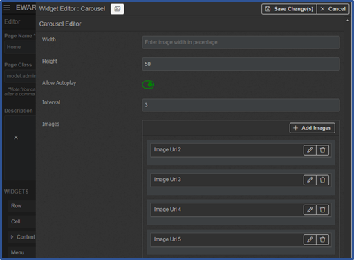
- Click on
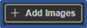
, and an image URL row is added. Click on the edit icon.
| Note: it is recommended that sizes should be kept identical for all the images you upload. |
Click on the upload icon to upload the image, and the image URL is added. Alternatively, you can enter the URL in the Image URL field.
Enter Image Text (e.g. “Polio networks bolster pandemic response in the WHO South-East Asia Region”).
Click on Save Change(s) – the changes are saved, and the widget closes.
Step 3. Change the video.
- On the homepage configuration screen, click on the cell with the label Video, and the widget editor opens, as shown below:
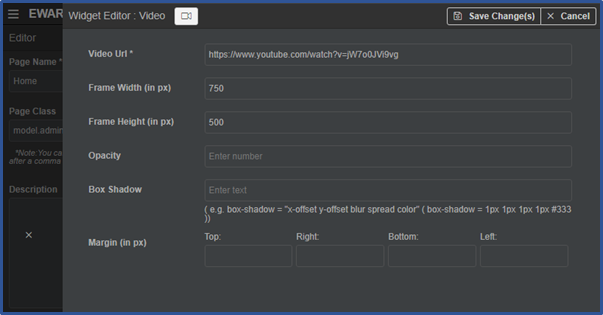
- Replace the Video URL with your desired YouTube URL (e.g. https://www.youtube.com/watch?v=-tKH6XARTG4).
| Only Y | ouTube URLs are supported in the video widget. |
- Click on Save Change(s) – the changes are saved, and the widget closes.
In addition to the modifications explained above, you can also add a new row to the homepage, with widgets like documents and outbreaks widgets, as shown below:
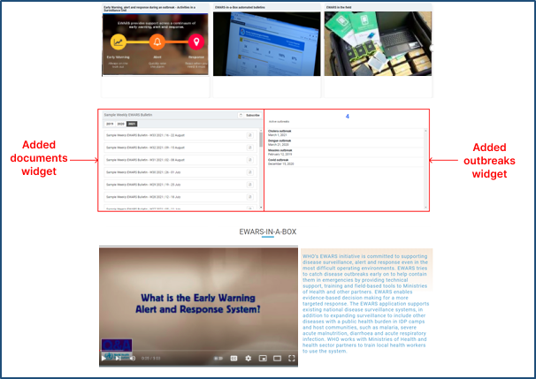
Follow the steps below to add a new row with two widgets: documents and outbreaks widgets.
Step 1. Add a documents widget in the left-hand cell.
The documents widget allows you to give the public access to the Weekly EWARS Bulletin or any other bulletin produced in EWARS.
On the homepage configuration screen, drag and drop a Row widget from the left-hand side to the mid-section, and a new row is added. Drag and drop a Cell widget onto the added row, and the row is divided into two vertical cells. Click on the expand
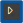
icon to expand the Other category > drag a Documents widget to the left-hand cell.Right-click on the cell, and cell options are visible. Click on
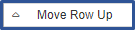
to move the row up to between the HTML and the Video widgets, as shown below:
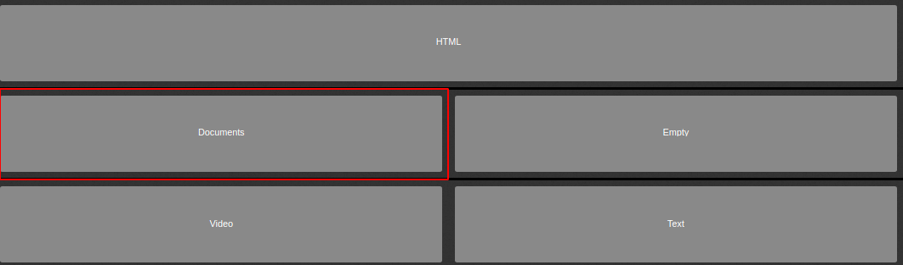
- Click on the cell with the label Documents, and the documents widget editor opens, as shown below:
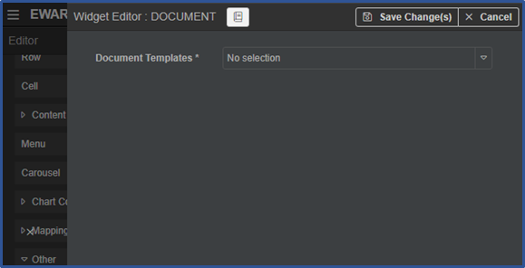
- Select Sample Weekly EWARS Bulletin in the Document Templates field > click on Save Change(s) – the changes are saved, and the widget closes.
Step 2. Add an outbreaks widget to the right-hand cell.
The outbreaks widget allows you to display ongoing and concluded outbreaks in your context.
Click on the expand icon to expand the User category > drag and drop an Outbreaks widget onto the right-hand cell.
Click on the cell, and the outbreaks widget editor opens, as shown below:
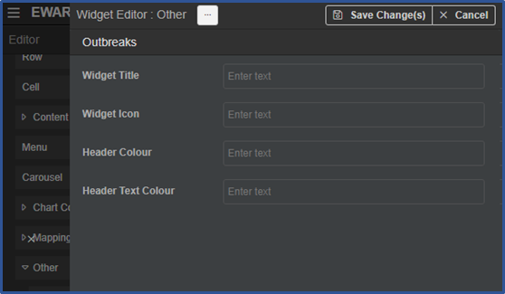
Enter a title for the widget (e.g. “Active Outbreaks”).
Click on Save Change(s) – the changes are saved, and the widget closes.
To edit the outbreak details, refer to Chapter 20. Outbreaks.
Click on Save Change(s), and the homepage content changes are saved.
Click on to view the applied changes.
22.3.5 Adding or removing a new page
It is recommended that you retain the standard structure, but you can add pages under the various sections if required.
For demonstration purposes, this guide shows how to remove two pages (Hep E Outbreak (Jan – Nov 2020) and Cholera Outbreak (Aug 19 – Mar 21)) and to add one page (Malaria Outbreak (ongoing)) to the outbreaks menu, as shown below:
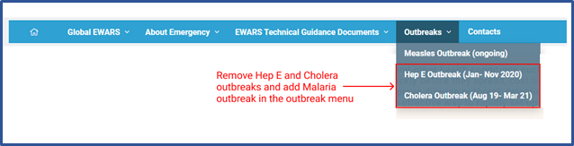
Follow the steps below to remove and add pages.
- Select Menu > Website Builder. Click on the edit icon, and the website editor opens. Keep Header Page selected in the drop-down menu visible at the top left-hand corner > click on the second row with the label Menu, and the menu editor below appears:
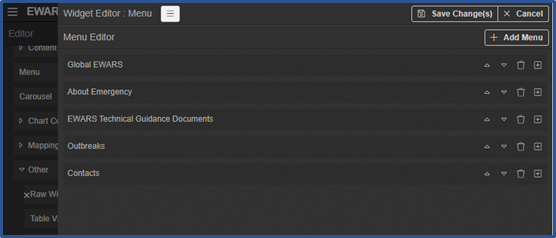
Step 1. Remove the menu items for the hepatitis E and cholera outbreaks.
- Click on the expand
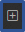
icon in the Outbreaks menu, and the menu expands, as shown below:
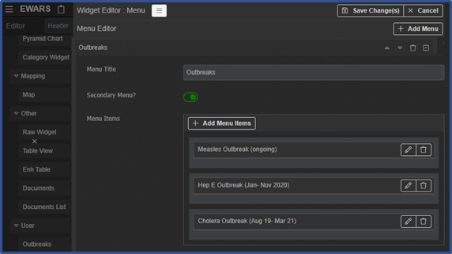
Click on the delete icon for both the menu items Hep E Outbreak (Jan-Nov 2020) and Cholera Outbreak (Aug 19 – March 21).
Click on Save Change(s) – the changes are saved, and the header page configuration screen opens, as shown below:
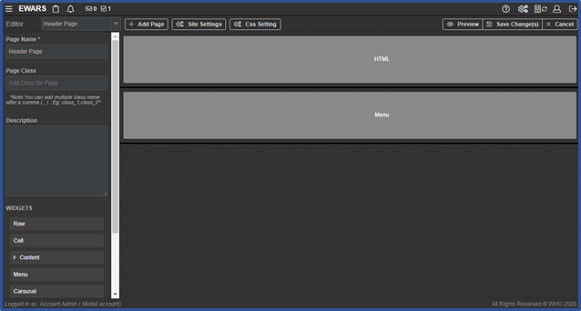
Step 2. Delete the associated pages for the hepatitis E and cholera outbreaks.
- On the header page configuration screen, look for the page navigation drop-down menu at the top left-hand corner > select the Page Name Hep E Outbreak (Jan-Nov 2020) > scroll down to the bottom of the screen:
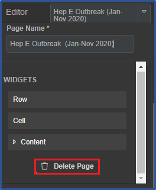
- Click on
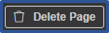
, and the page is deleted.
| WARNING: This action is irreversible as a page cannot be recovered once deleted. |
- Similarly, delete the Cholera Outbreak (Aug 19 – March 21) page.
Step 3. Add a malaria outbreak page.
Select Menu > Website Builder. Click on the edit icon, and the website editor opens.
Click on
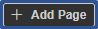
, and a new page and its properties are visible. Enter a Page Name [Mandatory] (e.g. “Malaria Outbreak (Ongoing)”).
Step 4. Add a menu item for a malaria outbreak in the outbreaks menu and link it to the newly created malaria outbreak page.
Select Header Page from the page drop-down menu at the top left-hand corner > click on the second row with the label Menu, and the menu editor opens.
Click on the expand icon in the Outbreaks menu, and the menu expands.
Click on
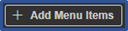
to add a new menu item row, and a new row is added, as shown below:
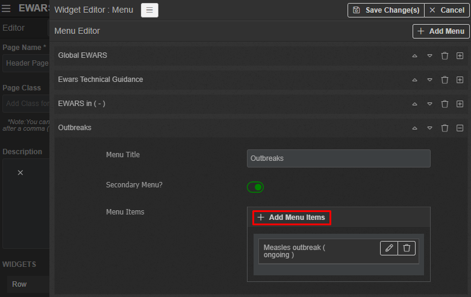
Click on the edit icon > enter the Menu Item Name (e.g. “Malaria Outbreak (Ongoing)”) and a new menu item is added. Select the Page Malaria Outbreak (Ongoing), and the page is linked.
Click on Save Change(s).
Click on , and the website opens in a new tab. Go to the Outbreaks menu, click on the menu item Malaria Outbreak, and the Malaria Outbreak page and its contents are visible.
22.4 Creating a new website
Instead of modifying the sample website, you may want to create a completely new website. To do so, follow the steps below.
- Select Menu > Website Builder. Click on Create New, and the screen below appears:
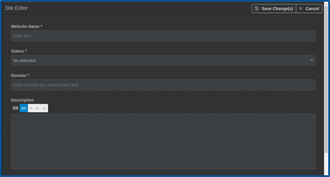
- Populate the fields, as shown below.
Website Name [Mandatory]: enter the website name (e.g. “Ministry of Health Nambutu”).
Status [Mandatory]: select the relevant option (Published/Unpublished) according to your requirements. For additional information, refer to the explanation of status fields in topic 22.3.1 Modifying the site settings.
Domain [Mandatory]: enter the Domain of the website. For additional information, refer to the explanation of domain fields in topic22.3.1 Modifying the site .
Description: enter a description of the website.
Tags: enter a tag for the bulletin template. A tag is an identifier that will help you to find your template in the configuration transfer menu. You can add one or more tags or leave the tag blank.
Upload CSS or JS File: upload a CSS or JS file to be applied to the header page. If you have no prior knowledge of CSS or JS, there is no need to upload a file: failing to do so will not affect the existing style of the website. If you need further information or support, please contact the EWARS Super Administrator.
- Click on Save Change(s).
22.5 Configuring a newly created website
| Please | contact the EWARS Super Administrator if you need support in configuring a website for EWARS |
- Select Menu > Website Builder. Click on the edit icon, and the website editor screen below appears:
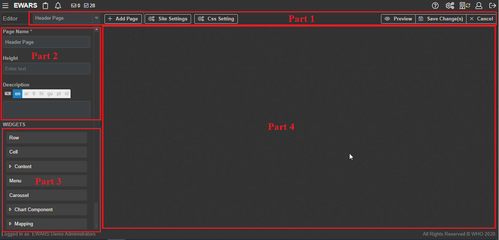
The screen is divided into four parts.
Part 1: the top toolbar actions, including:
Page navigation drop-down menu, which allows you to switch between pages – by default, header and footer pages are available inside menu
Add Page, Site Settings, CSS Settings and Preview – these are described in topics 22.5.2 Adding a new page, 22.5.6 Editing the site settings, 22.5.7 Applying CSS settings and 22.5.4 Previewing the website.
Part 2: the page settings, including:
Page Name [Mandatory]: this should be a short name for the page (e.g. “Home”, “About” or “Contact Us”)
Page Class: this is an optional field – you can enter a CSS class to apply extra styling to the page; you can also add multiple class names separated by a comma. You can provide any name for the CSS class, and the relevant code for the class needs to be provided in the Editor tab under CSS settings. A few in-built classes are available for use under the Help tab. It is not mandatory to use a CSS class if you have no prior knowledge of these. If you need further information or support, please contact the EWARS Super Administrator.
Description: this is an optional field – you can enter text describing the page.
Part 3: the widgets section, containing widgets that are the building blocks of the page and can be dragged and dropped on to a webpage to populate it, including:
Container widgets (Row widgets and Cell widgets): these are required to build a page, and they can contain non-container widgets.
Non-container widgets: these are of two types:
Static widgets are text, image, video, HTML, menu, and carousel widgets – these are not linked to EWARS data in the system, and do not use or display data you have collected in EWARS
Dynamic widgets are chart components, mapping, other and user group components – these are tied to EWARS data.
For more information on container and non-container widgets, refer to Chapter 17. Widgets and their configuration.
Part 4: the page designing area, which is the central space where the container and non-container widgets are dragged and placed to design a page.
22.5.2 Adding a new page
- Select Menu > Website Builder. Click on the edit icon, and the website editor screen opens. Click on > enter the Page Name [Mandatory] > enter the Page Class > enter the Description > click on Save Change(s), and the page is created.
| Note: you can add several pages to your website. These appear in the page navigation drop-down menu and can be modified. |
22.5.3 Designing a page
Select Menu > Website Builder. Click on the edit icon of a website, and the website editor screen opens.
Drag and drop a Row widget from Part 3 to Part 4 in the screenshot above.
Drag and drop a Cell widget onto the row to divide a row into multiple cells. If more cells are added, the size will become smaller. Each cell represents a section you can add to the page.
Once the desired page structure is achieved, drag the relevant static or dynamic widget onto each of the cells.
Configure all the widgets placed in the cells. Refer to Chapter 17. Widgets and their configuration for detailed explanations of each type of widget before adding appropriate widgets to the webpage.
Right-click on the row or cell to view more options, as shown below:
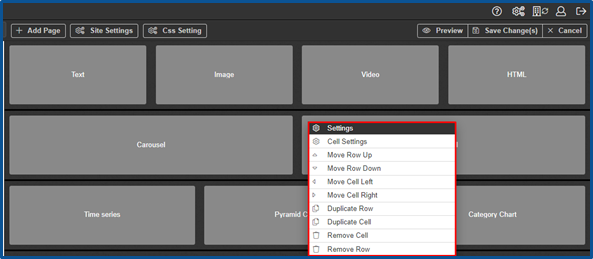
You can move the rows and cells, duplicate them or remove them as you configure the page. For more information, refer to Chapter 17. Widgets and their configuration, topic 17.3 Row and cell widgets.
22.5.4 Previewing the website
Previewing allows users to browse the site and check how it will appear to the public before it is published. You can preview the website that is being configured, irrespective of its published or unpublished status.
Select Menu > Website Builder. Click on the edit icon of a website, and the website editor screen opens.
Click on to preview the website in a new tab.
22.5.5 Deleting a page
| WARNING: This action is irreversible as a page cannot be recovered once deleted. |
- Select Menu > Website Builder. Click on the edit icon, and the website editor screen opens. In the page navigation drop-down menu, select the page to be deleted. Scroll down > click on , and the page is deleted.
22.5.6 Editing the site settings
Site settings allow you to edit already completed fields such as the website name, status, domain, description or tag, and to upload CSS or JS files.
- Select Menu > Website Builder. Click on the edit icon, and the website editor screen opens. Click on
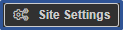
> make the required changes (e.g. changing the description or website name). Click on Save Change(s).
22.5.7 Applying CSS settings
CSS settings help to change the style and presentation of the webpage, such as the page layout, colours, fonts and so on. In EWARS, CSS settings help you to customize the style of your website by overriding the existing styles.
| Note: CSS or JS are powerful ways to apply styling to a website, although these require technical knowledge of HTML, CSS and/or JS. It is not mandatory to modify the CSS settings, especially if you have no prior knowledge of CSS or JS. If no modification is made, the default EWARS styling will be applied to the settings. For technical support on CSS or JS files, please contact the EWARS Super Administrator. |
To apply CSS settings, follow the steps below.
- Select Menu > Website Builder. Click on the edit icon of a website, and the website editor screen opens. Click on
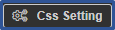
, and the CSS Editor popup window below appears:
- Click on the Help tab, and a list of CSS classes appears, as shown below:
Copy any of these CSS classes (e.g. menu-bar-class) > click on the Editor tab > paste the CSS class into the editor screen and write the relevant code.
Click on Save Change(s) – the CSS Settings are saved, and the popup window closes.
For example, you can change the menu bar background colour using CSS settings, as set out below.
| Note: it is recommended that you do not change the background colour of the menu, but if you want to build an outbreak website, then you can go for it. |
- Write the following CSS code in the Editor tab:
“.menu-bar-class
{
background-color: #2a7da1;
}”
Click on Save Change(s) – the CSS settings are saved, and the popup window closes.
Click on Preview to view the applied changes, as shown below:
22.6 Duplicating a website
You can duplicate an existing website and modify it according to your requirements.
- Select Menu > Website Builder. Click on the duplicate icon of the website (e.g. Demo Website (web1.ewars.ws)). Click on Confirm, and a duplicate website named “Demo Website (web1.ewars.ws)_copy” is added.
22.7 Deleting a website
You can delete an existing website when it is not in use.
- Select Menu > Website Builder. Click on the delete icon of the website (e.g. Demo Website (web1.ewars.ws)). Click Confirm, and the website is deleted.
The following chapter explores the Export feature, which facilitates the export of system data in different formats, according to your requirements.